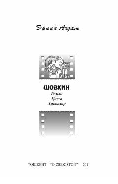

STaniqli yozuvchi Erkin A'zamning saralangan roman, qissa va hikoyalari to'plami.
Mazkur тўпламга taniqli yozuvchi Erkin A'zamning roman, qissa va bir turkum hikoyalari kiritilgan bo'lib, ular inson taqdirlari, xotiralar va hayotiy vaziyatlarni aks ettiradi. Kitob o'quvchini o'tmish va bugungi kun mushohadasiga chorlaydi.